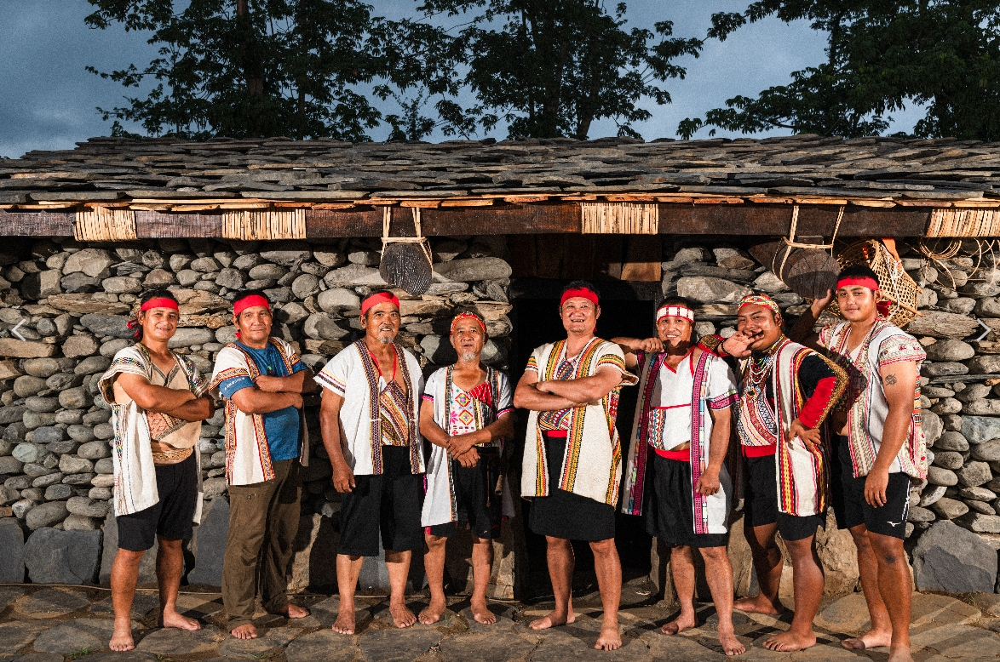
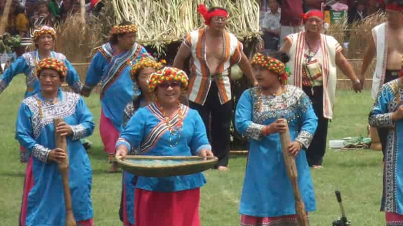

族群介紹
布農族主要分布於台灣中央山脈兩側，包括南投、花蓮、台東與高雄山區。 以農耕、狩獵文化聞名，更以世界知名的 「八部合音」(Pasibutbut) 聲樂文化享譽國際。 族人與山林的關係密不可分，強調共享、合作與家族群體的重要性。
地理位置（Google 地圖示意）
景點特色
以下為與布農族文化、歷史、祭典及自然環境相關的重要景點：
| 地點名稱 | 所在縣市 | 特色說明 |
|---|---|---|
| 東埔部落（布農族傳統聚落） | 南投縣信義鄉 | 保留布農族傳統聚落文化，是了解布農族生活方式、歌謠及祭儀的重要地區。 |
| 永康部落（八部合音文化） | 花蓮縣卓溪鄉 | 以布農族八部合音聞名，經常有音樂演出與文化導覽，是布農族最具聲名的文化象徵地點之一。 |
| 梅山口（示意） | 台東縣、花蓮縣交界 | 附近有多個布農族部落，是布農族傳統狩獵區，擁有豐富山林文化。 |
飲食文化
布農族飲食深受山林、農耕與狩獵文化影響，以下為代表性食物：
| 料理名稱／食物 | 主要食材 | 文化特色說明 |
|---|---|---|
| 小米與穀類料理 | 小米、糯米、地瓜等 | 小米是布農族的重要農作物，常用於年祭與慶典，象徵豐收與團聚。 |
| 鹹豬肉（傳統保存食物） | 豬肉、鹽巴、香料 | 透過醃製與風乾保存，是布農族家庭常見的祭典或款待客人的料理。 |
| 野菜與山菜料理 | 野菜、山蘇、山芹菜等 | 布農族擅長採集山林野菜，料理方式簡單自然，保留食材原味。 |
照片與影片介紹
部落／祭典照片
 以上為布農族的衣著特色。
影片介紹
以上為布農族的文化介紹影片。